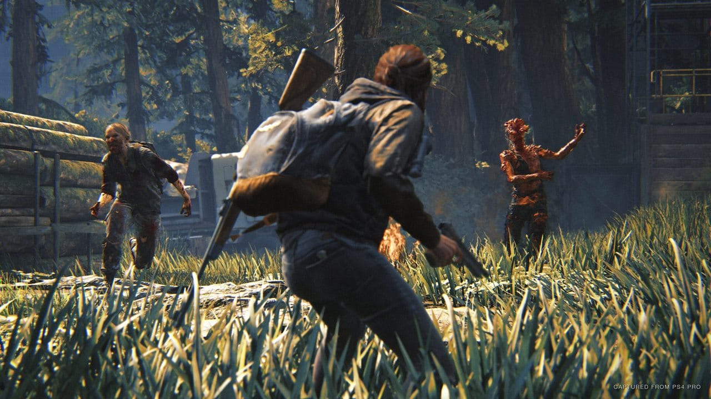

EasyPlay Studios
StoryGames
Descubra os melhores jogos de história
The Last Of Us
Lançado em 2013 pela Naughty Dog, é um jogo que redefine os padrões do gênero de ação e aventura, oferecendo uma experiência narrativa inesquecível e emocionalmente envolvente. Situado em um mundo pós-apocalíptico devastado por uma pandemia, os jogadores embarcam em uma jornada épica acompanhando Joel, um homem endurecido pela tragédia, e Ellie, uma adolescente corajosa que carrega consigo uma esperança crucial. A trama é um destaque, mergulhando profundamente nas vidas dos personagens e explorando temas complexos como sobrevivência, sacrifício e a dinâmica de relacionamento entre Joel e Ellie. A narrativa é enriquecida por diálogos envolventes, atuações impressionantes e uma trilha sonora arrebatadora, criando um elo emocional intenso com os jogadores. O ambiente pós-apocalíptico é ricamente detalhado, proporcionando uma atmosfera sombria e realista. A jogabilidade equilibra habilmente momentos de ação intensa com sequências furtivas, enquanto os jogadores enfrentam não apenas inimigos humanos, mas também as ameaças resultantes do colapso da civilização.
 Os visuais são notáveis, com a Naughty Dog demonstrando maestria técnica e direção artística impecável. As animações faciais e expressões capturam nuances emocionais de maneira excepcional, contribuindo para a imersão única que o jogo oferece.
"The Last of Us Part II", lançado em 2020, continua a saga, expandindo a narrativa e desafiando ainda mais as emoções dos jogadores. Ambos os títulos recebem elogios pela abordagem madura da narrativa e pela habilidade de criar uma conexão emocional genuína com os personagens.
Este jogo não é apenas uma obra-prima técnica, mas também um marco cultural que influenciou a indústria de jogos, demonstrando que os videogames têm o poder de contar histórias profundas e provocativas. "The Last of Us" é um legado duradouro, marcando sua posição como um dos melhores jogos já produzidos.
Os visuais são notáveis, com a Naughty Dog demonstrando maestria técnica e direção artística impecável. As animações faciais e expressões capturam nuances emocionais de maneira excepcional, contribuindo para a imersão única que o jogo oferece.
"The Last of Us Part II", lançado em 2020, continua a saga, expandindo a narrativa e desafiando ainda mais as emoções dos jogadores. Ambos os títulos recebem elogios pela abordagem madura da narrativa e pela habilidade de criar uma conexão emocional genuína com os personagens.
Este jogo não é apenas uma obra-prima técnica, mas também um marco cultural que influenciou a indústria de jogos, demonstrando que os videogames têm o poder de contar histórias profundas e provocativas. "The Last of Us" é um legado duradouro, marcando sua posição como um dos melhores jogos já produzidos.
God Of War
Uma criação magistral da Santa Monica Studio lançada em 2018, redefine o gênero de ação e aventura, apresentando uma narrativa poderosa e uma jogabilidade cativante. Situado no mundo nórdico, o jogo segue Kratos, o espartano deificado, e seu filho Atreus, em uma jornada épica marcada por mitologia, redenção e paternidade. A narrativa é um dos destaques, abordando o amadurecimento de Atreus e a busca de Kratos por expiação por seus pecados passados. A mitologia nórdica é habilmente entrelaçada na trama, proporcionando uma profundidade raramente vista em jogos. A dinâmica entre Kratos e Atreus é fundamental, criando uma conexão emocional genuína. As performances de voz são notáveis, trazendo os personagens à vida de maneira impressionante. A trilha sonora épica eleva ainda mais a experiência, contribuindo para a atmosfera épica. A jogabilidade é uma fusão perfeita de combate visceral e quebra-cabeças desafiadores. A Leviatã, machado mágico de Kratos, e as habilidades de Atreus acrescentam camadas estratégicas ao combate, enquanto os visuais deslumbrantes e a direção de arte soberba criam um mundo visualmente envolvente.
Os visuais são extraordinários, com planos sequência notáveis que mantêm a imersão sem cortes. A atenção aos detalhes e a qualidade técnica são evidentes em cada aspecto do jogo, desde os ambientes exuberantes até as criaturas mitológicas. Além disso, o jogo não hesita em desafiar as expectativas dos fãs da série, introduzindo uma nova abordagem narrativa e alterando significativamente o estilo de jogo. Essa reimaginação foi aclamada tanto pela crítica quanto pelos jogadores, solidificando "God of War" como uma obra-prima na indústria de jogos eletrônicos. O impacto cultural e a influência duradoura de "God of War" são inegáveis, colocando-o entre os melhores jogos já produzidos. Sua mistura inovadora de narrativa, jogabilidade refinada e apresentação visual deslumbrante marcam um novo padrão para o que os jogos podem alcançar.
Red Dead Redemption 2
Uma criação magistral da Rockstar Games lançada em 2018, transporta os jogadores para o cenário épico e brutal do Velho Oeste americano. Narrado sob a perspectiva de Arthur Morgan, membro da gangue Van der Linde liderada por Dutch Van der Linde, o enredo mergulha profundamente em temas como honra, moralidade e a transição do oeste selvagem para a civilização. O vasto e deslumbrante mundo aberto de RDR2 é uma verdadeira maravilha, oferecendo desde as vastas planícies até as majestosas montanhas, criando um ambiente diversificado e detalhado. Cada trilha de pó, cidadezinha ou campo isolado conta uma história, contribuindo para a atmosfera rica e autêntica do jogo A profundidade dos personagens é uma das maiores realizações do jogo, com Arthur Morgan se destacando como um protagonista complexo, cujo desenvolvimento é influenciado pelas escolhas éticas do jogador. A dinâmica dentro da gangue Van der Linde, composta por personagens vívidos e memoráveis, cria uma narrativa rica e emotiva. A jogabilidade, meticulosamente projetada para ser realista e envolvente, abrange desde a interação cuidadosa com o ambiente até a gestão essencial dos recursos, como comida e saúde do cavalo. A caça torna-se uma atividade vital, enquanto os elementos climáticos e temporais dinâmicos adicionam profundidade à experiência.
As missões, diversificadas e muitas vezes emocionantes, conduzem os jogadores por uma jornada épica, repleta de desafios e reviravoltas. A trilha sonora, a música e os efeitos sonoros complementam magistralmente cada cena, criando uma atmosfera envolvente e imersiva. O modo online, Red Dead Online, amplia as fronteiras do jogo, permitindo que os jogadores explorem o vasto território com amigos, participem de atividades variadas e vivam sua própria saga no Velho Oeste compartilhado. Atualizações contínuas continuam a enriquecer o conteúdo, mantendo a comunidade engajada. Red Dead Redemption 2 foi laureado com elogios da crítica e do público, conquistando inúmeros prêmios por sua narrativa, design de mundo, inovações na jogabilidade e atuações excepcionais. Ao entrelaçar perfeitamente uma narrativa densa, gráficos deslumbrantes e uma atenção meticulosa aos detalhes, RDR2 solidifica-se como uma obra-prima na indústria dos jogos, proporcionando uma experiência que transcende as fronteiras do entretenimento eletrônico.
Horizon Zero Dawn
 Lançado pela Guerrilla Games em 2017, é um jogo de ação e aventura que combina narrativa cativante, um mundo aberto deslumbrante e uma jogabilidade envolvente. Situado em um futuro pós-apocalíptico, os jogadores assumem o papel de Aloy, uma caçadora habilidosa em busca de respostas em um mundo habitado por criaturas robóticas colossais.
A história intrincada de "Horizon Zero Dawn" desvenda os mistérios do passado de Aloy e explora a sociedade tribal que emergiu após a queda da civilização tecnológica. A jornada de Aloy é pontuada por revelações surpreendentes, personagens memoráveis e questões éticas profundas, criando uma narrativa que prende os jogadores do início ao fim.
O mundo aberto expansivo é ricamente detalhado, com paisagens variadas, desde florestas densas até desertos vastos. As máquinas robóticas, recriações selvagens de animais, são visualmente impressionantes e oferecem desafios estratégicos, enquanto as ruínas tecnológicas adicionam camadas de mistério à ambientação.
Lançado pela Guerrilla Games em 2017, é um jogo de ação e aventura que combina narrativa cativante, um mundo aberto deslumbrante e uma jogabilidade envolvente. Situado em um futuro pós-apocalíptico, os jogadores assumem o papel de Aloy, uma caçadora habilidosa em busca de respostas em um mundo habitado por criaturas robóticas colossais.
A história intrincada de "Horizon Zero Dawn" desvenda os mistérios do passado de Aloy e explora a sociedade tribal que emergiu após a queda da civilização tecnológica. A jornada de Aloy é pontuada por revelações surpreendentes, personagens memoráveis e questões éticas profundas, criando uma narrativa que prende os jogadores do início ao fim.
O mundo aberto expansivo é ricamente detalhado, com paisagens variadas, desde florestas densas até desertos vastos. As máquinas robóticas, recriações selvagens de animais, são visualmente impressionantes e oferecem desafios estratégicos, enquanto as ruínas tecnológicas adicionam camadas de mistério à ambientação.
 A jogabilidade mistura combate tático, exploração e resolução de quebra-cabeças ambientais. O uso do Arco de Aloy, que pode ser modificado com diferentes tipos de flechas, adiciona uma dimensão estratégica ao enfrentar as máquinas. O sistema de hacking, a "Focus", permite aos jogadores investigar o ambiente e aprender sobre os inimigos.
A atenção aos detalhes na apresentação, desde a trilha sonora envolvente até as animações fluidas, contribui para a imersão. Aloy, com sua personalidade forte e determinação, se torna um personagem cativante, impulsionando a conexão emocional dos jogadores com o jogo.
"Horizon Zero Dawn" recebeu aclamação crítica por sua inovação, narrativa envolvente e qualidade técnica. Seus expansion packs, como "The Frozen Wilds", expandiram ainda mais a experiência. O jogo não apenas elevou o padrão para os jogos de mundo aberto, mas também estabeleceu-se como uma franquia promissora para o futuro dos videogames.
A jogabilidade mistura combate tático, exploração e resolução de quebra-cabeças ambientais. O uso do Arco de Aloy, que pode ser modificado com diferentes tipos de flechas, adiciona uma dimensão estratégica ao enfrentar as máquinas. O sistema de hacking, a "Focus", permite aos jogadores investigar o ambiente e aprender sobre os inimigos.
A atenção aos detalhes na apresentação, desde a trilha sonora envolvente até as animações fluidas, contribui para a imersão. Aloy, com sua personalidade forte e determinação, se torna um personagem cativante, impulsionando a conexão emocional dos jogadores com o jogo.
"Horizon Zero Dawn" recebeu aclamação crítica por sua inovação, narrativa envolvente e qualidade técnica. Seus expansion packs, como "The Frozen Wilds", expandiram ainda mais a experiência. O jogo não apenas elevou o padrão para os jogos de mundo aberto, mas também estabeleceu-se como uma franquia promissora para o futuro dos videogames.
Days Gone
Lançado pela Bend Studio em 2019 para PlayStation 4, é um jogo de ação e sobrevivência que mergulha os jogadores em um mundo pós-apocalíptico infestado de zumbis. No papel de Deacon St. John, um motociclista errante, os jogadores enfrentam não apenas as ameaças dos mortos-vivos, mas também os perigos apresentados por grupos hostis de sobreviventes. A trama complexa explora a jornada pessoal de Deacon em busca de sua esposa desaparecida em meio ao caos. O enredo é impulsionado por reviravoltas emocionais, destacando temas de perda, lealdade e redenção. O mundo aberto vasto e dinâmico oferece uma variedade de ambientes, desde florestas densas até campos abertos, criando uma atmosfera imersiva. A motocicleta de Deacon desempenha um papel central na exploração e na sobrevivência, adicionando uma camada estratégica única.
A jogabilidade combina ação intensa, combate tático contra hordas de zumbis e elementos de sobrevivência, como coleta de recursos e administração de combustível para a motocicleta. A interação com personagens não-jogáveis e a tomada de decisões afetam o desenvolvimento da história e o relacionamento de Deacon com o mundo ao seu redor. Os visuais impressionantes e os detalhes realistas do mundo pós-apocalíptico contribuem para a atmosfera do jogo. A trilha sonora e os efeitos sonoros acrescentam tensão e emoção às experiências de jogo. "Days Gone" recebeu opiniões diversas da crítica, com elogios pela narrativa envolvente e críticas direcionadas à jogabilidade ocasionalmente repetitiva. No entanto, muitos jogadores apreciaram a experiência única oferecida pela combinação de elementos de mundo aberto, sobrevivência e drama pessoal, solidificando o jogo como uma adição significativa ao gênero de apocalipse zumbi